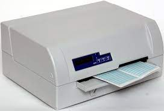

Typy tiskáren
Běžně používané typy
Jehličková Řada 8, 9 nebo 24 jehliček je umístěna v tiskové hlavě, která projíždí nad papírem kolmo na směr jeho posunu. Jehličky propisují přes barvící pásku na papír jemné body, z kterých se skládají písmena a obrázky. Tyto tiskárny mají velmi nízké náklady na tisk a mohou vytvářet kopii průpisem (přes kopírák). Mohou se tak například tisknout mzdové lístky ve speciálních zalepených obálkách. Další výhodou je, že tisková páska se opotřebovává postupně a nedojde najednou. Stejně tak je často používán "nekonečný" papír s boční perforací, který může být tenčí (a tím i levnější) a jeho vedení tiskárnou je spolehlivější. Nevýhodou je větší hlučnost, horší kvalita tisku a u levnějších modelů nízká rychlost tisku.
Termální (tepelné) - tiskne se pomocí tepla přímý tisk - tisková hlava je tvořena malými odpory s malou tepelnou setrvačností - výhodou je, že jediný spotřební materiál je papír, nevýhodou je vyšší cena papíru a malá stabilita tisku, často se používají v supermarketech, rychle a potichu tisknou. Tato metoda tisku se používala ve faxech (dnes obvykle nahrazeno inkoustovým nebo laserovým tiskem). termotransferové - jedná se vlastně o sublimační tisk, princip je stejný jako u přímého termálního tisku, jen je mezi hlavou a papírem speciální termotransferová fólie, ze které se barva teplem přenese na potiskované medium, kterým může být běžný papír. Jedno- i vícebarevný tisk se používá v tiskárnách na potisk štítků (Dymo), plastových karet nebo při tisku fotografií ve vysoké kvalitě.
Inkoustové tisková hlava tryská z několika desítek mikroskopických trysek na papír miniaturní kapičky inkoustu termické- tisková hlava pracuje s tepelnými tělísky, které zahřívají inkoust. Při zahřátí vznikne v trysce bublina, která vymrští inkoustovou kapku na papír. piezoelektrické - tisková hlava pracuje s piezoelektrickými krystaly. Krystal je destička, která je schopna měnit svůj tvar. Funguje tedy jako mikroskopická pumpička, která je schopna vystřelit kapku na papír. voskové (tuhý inkoust) - princip se velmi blíží klasické inkoustové tiskárně, ale místo tekutého inkoustu se používá speciální vosk, který se po natavení vystřikuje mikrotryskami na papír. Tyto tiskárny jsou specifické tím, že dokáží namíchat barvu bodu i bez překryvných rastrů. Mají velmi živé podání barev a vyznačují se vysokou kvalitou výtisku.
Laserové pracují na stejném principu jako kopírky: laserový paprsek vykresluje obrázek na fotocitlivý a polovodivý, obvykle selenový válec, na jehož povrch se poté nanáší toner; toner se uchytí jen na osvětlených místech, obtiskne se na papír a na závěr je k papíru tepelně fixován (zažehlen teplem cca 180 °C a tlakem)
LED tiskárny funguje na podobném principu jako laserová tiskárna: řada LED (světlo emitujících diod) vykresluje obraz na fotocitlivý, tiskový válec (obvykle selenový), na jehož povrch se poté nanese toner, uchytí se na osvětlených místech, obtiskne se na papír a na závěr je k papíru tepelně fixován řádkové - tisknou celý řádek najednou a jsou velmi rychlé, v některých aplikacích stále nenahraditelné, rychlost až 2000 řádků / min. sublimační - pracují na principu sublimace, používají se k tisku na komplikovaný povrch, např. keramika, textil.
Zastaralé typy tiskáren
Řetězové jednotlivé typy se znaky jsou umístěny za sebou na řetězu, který se neustále pohybuje nad papírem kolmo na směr jeho posunu. Z druhé strany papíru je sada kladívek, která udeří proti řetězu v okamžiku, kdy je proti kladívku ve správné pozici článek řetězu s písmenem. Na jeden oběh řetězu je vytištěn celý řádek.
Bubnové - celá sada typů se znaky je umístěna po obvodu bubnu zvlášť v každé pozici na řádku. Buben se otáčí ve shodném směru s pohybem papíru a ve vhodnou chvíli proti bubnu udeří kladívko. V celém řádku se tak vytisknou zároveň všechna A, B a podobně. Papír se pohybuje souvisle, takže charakteristickým rysem je, že všechna A jsou vytištěna výše, než Z
Znakové - obdoba elektrických psacích strojů, kdy v tiskárně byla jednotlivá písmena, která se tiskla jedním úderem: znakové s kulovou hlavicí - převážně použito u tiskáren IBM. Tvar tiskací hlavy připomíná vajíčko, na kterém jsou rozmístěny znaky. znakové s typovým kolem - typové kolo, jiným jménem „kopretina“. Tisková hlava připomíná kopretinu se znakem
